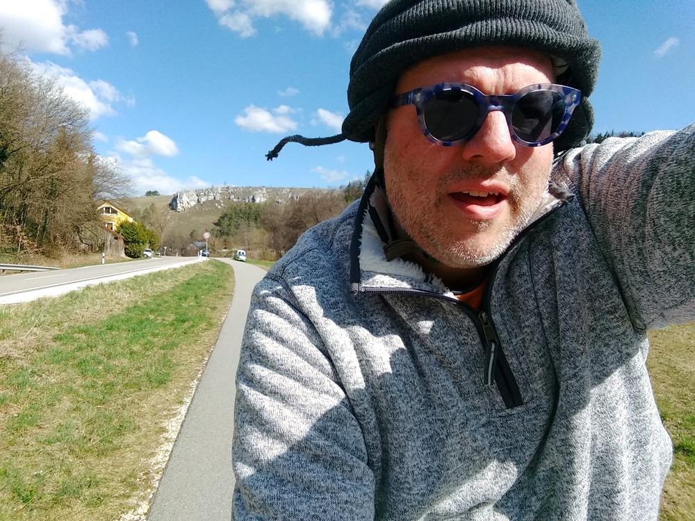

2 minutes
Easter 2021
Happy Easter!
It’s been an ecumenical year since I started doing this. Time flies even when you’ve got nowhere (on the larger scale) to go.
I went back to the region where I slid down a mountain on my butt, but this time I was very careful about the elevation over horizontal distance. I learned from that mistake, for sure.
It was not even 45 kilometers, but more of those were uphill than I am ready for, so I am moving slowly around the house for the rest of today. I’d say the skies and views made it worth it, though.
Some observations on this route:
- Saxberg…I thought that street called “Regensburger Steig” was going to be my undoing, but I got through it OK, and looking at my average pulse for the whole trip, I did better than I thought.
- Watch for Shetland ponies between Reichenstetten and Dürrnstetten.
- Lindach is very smelly. Frische Landluft. Some people like that.
Snaps

Watch out for them high-speed frogs!





Saw a few Shetland ponies near Reichenstetten and Dürrnstetten.
This is where I was supposed to come down from the hill when I slid down on my butt.

Golfers gonna golf.
Video Recap
These are a couple descents:
- a steep one down into and through Eilsbrunn (past the World’s Oldest Gaststätte)
- a gentle one headed into Reichenstetten
I removed the audio track because it’s just buzzy vibrations of the camera inside its protective case.
Route
You might need to tap or click the map to make it bigger. The red solid route was my intention. The blue dashed route is my actual route. I deviated from the planned route on purpose on the way back to go through the Roter-Brach-Weg neighborhoods.

Stats
Total Distance: 44.6 km
Time: 3:19
Calories: 2394
Calories from fat: 15 %
Average Heart Rate: 135
Maximum Heart Rate: 166
Fat Burn: 0:17
Fitness: 3:02
314 Words
2021-04-04 02:00